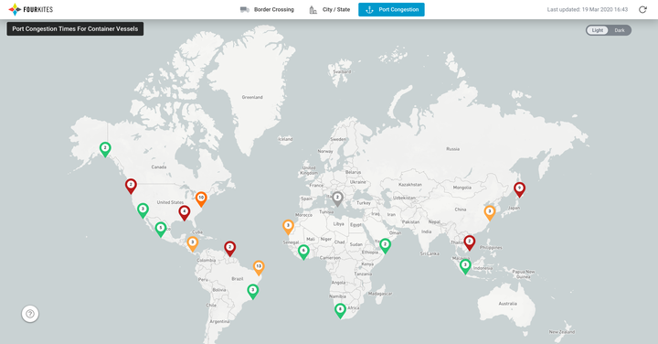

Cross-Border Delays: A Live Supply Chain Response Map
A free, interactive border-crossing and port-congestion map built in response to COVID-19 disruptions — covering the US, Mexico, Latin America, and Europe.
Design Leadership · Data Visualization · Public Tool
Context
Early in the COVID-19 pandemic, newly imposed border controls across the globe left drivers stranded and freight backed up for miles — necessary for public health, but devastating for keeping stores stocked, especially in regions like Europe where cross-border commerce had been frictionless for decades. FourKites' network already had the underlying visibility data; what was missing was a way to put it directly in front of the entire logistics community, not just paying customers.

What we built
A free, public, interactive map showing average border wait times for trucks and ships, launched first at the US/Canada border and expanded to Mexico, Latin America, and Europe as the pandemic's supply chain impact widened. A companion port-congestion map followed, built on a rolling week of congestion data and a rolling month of dwell-time data across FourKites' network — surfacing wait-for-berth, wait-at-port, import dwell, and export dwell status so shippers could see when overseas port congestion was clearing.

Why make it free
This wasn't gated behind a FourKites login. Making the tool public meant state governments could use the regional US and Latin America data to understand goods flow into their region and reroute supply convoys around emerging shortages — turning a data asset FourKites already had into a resource the whole logistics community, competitors included, could act on during a genuine crisis.
Impact
The tool drew press coverage from Bulk Transporter, GlobeNewswire, and TruckingInfo, and became one of the more visible examples of FourKites' network data being put directly in service of the broader supply chain community rather than held as a competitive advantage.